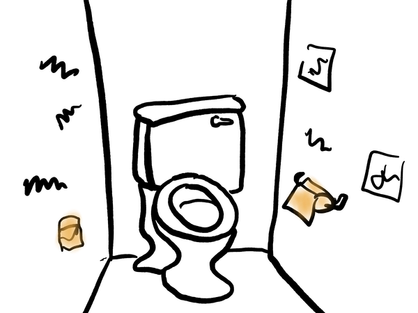

Throne Room
Online Bathroom Rituals
Throne Room was a public bathroom created for events online.
In the Throne Room you are invited to draw graffitti collaboratively with others and to consider things you'd like to flush away.
This project was shown at A MAZE. Berlin 2020.
Throne Room is currently "closed" but you can still visit and peek around.

Early Sketches:

Tweet:
I'm making a small playable thing set in a bathroom.
— Marie LeBlanc Flanagan (@omarieclaire) June 25, 2020
What would you most like to experience in an imaginary bathroom?
Bathroom-wall grafitti writing? Toilets where you can spiritually flush things away? Handwashing? Tissues for crying? Reflection? Makeup? Something else?